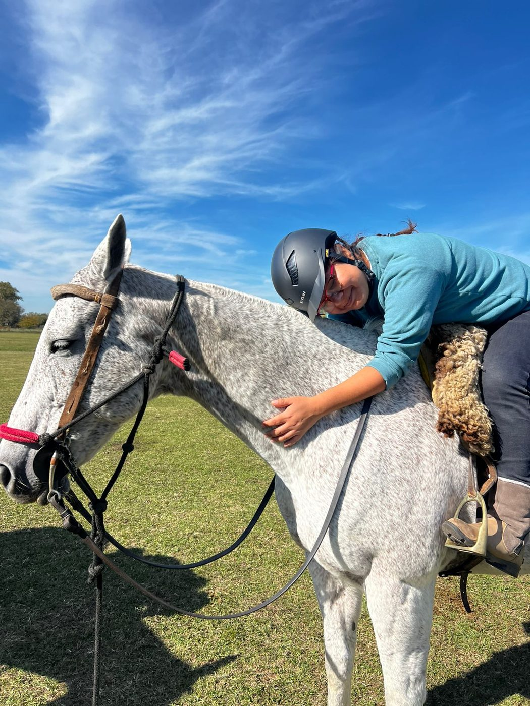

Nuestro compromiso
Bienestar equino
Un caballo tranquilo, saludable y dispuesto es la base de todo lo que hacemos.
Confianza, comunicación y equilibrio
El caballo, nuestro compañero
La arquería montada exige una relación de confianza, comunicación y equilibrio entre jinete y caballo. Por eso, para nosotros el bienestar equino no es un aspecto complementario de la actividad: es una condición fundamental para practicarla.
Nuestro objetivo es que el caballo pueda desenvolverse tranquilo, saludable y dispuesto, respetando sus capacidades físicas y su comportamiento natural.
Manifiesto de Bienestar EquinoJinetes de Orión · PDF